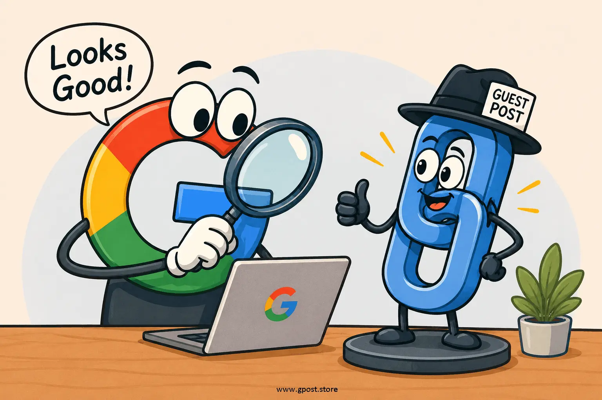

Does Google count guest post backlinks: Expert Guide for 2026
Does Google count guest post backlinks is one of the most misunderstood SEO questions in 2026, especially for marketers trying to scale organic traffic through link building. Many website owners assume guest post backlinks are either fully powerful or completely ignored, but the reality is far more nuanced. Google evaluates every link through multiple layers of trust, relevance, and intent, which makes the outcome depend heavily on how the backlink is earned and placed.
The confusion becomes even deeper when you consider factors like how Google detects guest post links and whether those links appear natural or part of an outreach pattern. In this guide, I’ll break down exactly how Google treats these backlinks, what makes them valuable, and when they lose SEO impact in real-world ranking systems.

Visual representation of how Google evaluates guest post backlinks in modern SEO
What Is Does Google count guest post backlinks?
Does Google count guest post backlinks refers to the process of understanding whether Google recognizes backlinks placed inside guest posts as ranking signals. Guest post backlinks are links inserted into articles published on external websites through outreach, collaboration, or editorial contribution.
Google does count many guest post backlinks, but not all of them carry equal SEO value. The system evaluates whether the link appears naturally placed within high-quality content or artificially inserted for ranking manipulation. Context, relevance, anchor text, and site authority all play a major role in determining how much value the link passes.
For example, a guest post on a reputable marketing blog with in-depth content and relevant citations can positively influence rankings. On the other hand, a mass-produced guest post on irrelevant blogs may have little to no impact.
Why Does Google count guest post backlinks Matters for SEO in 2026
Does Google count guest post backlinks matters in 2026 because Google’s ranking systems have evolved from simple link counting to advanced link quality evaluation. Backlinks are no longer equal signals; they are categorized based on trust, relevance, and acquisition method.
According to multiple SEO industry analyses, backlinks still influence over 50% of ranking performance in competitive SERPs. However, Google’s AI systems now prioritize contextual relevance and editorial authenticity over raw link volume.
- Stronger domain authority when links are natural and relevant
- Higher organic visibility in competitive SERPs
- Improved trust signals for brand authority
- Better long-term ranking stability
This is closely tied to what makes a guest post backlink valuable to Google, where content quality and niche alignment determine SEO impact.
Types of Does Google count guest post backlinks
Does Google count guest post backlinks can be categorized into different types based on how they are acquired and how Google evaluates their trust signals in ranking systems.
Free / Organic Guest Posts
These are earned through value-driven outreach or content collaboration without payment. They are often more trusted by Google because they resemble editorial placements.
- Pros: High trust, natural link profile
- Cons: Hard to acquire consistently
Paid / Sponsored Guest Posts
These links are acquired through payment or sponsorship agreements and may be flagged if not properly disclosed.
- Pros: Fast and scalable acquisition
- Cons: Lower SEO value if detected as manipulative
Niche Blog Outreach Guest Posts
This is the most common SEO strategy where marketers pitch content to niche blogs for backlink placement.
- Pros: Scalable and effective for new websites
- Cons: Requires consistent outreach effort
Editorial-Style Guest Posts
These guest posts are high-quality contributions that mimic editorial content and often gain stronger SEO value.
- Pros: High authority and strong ranking potential
- Cons: Requires strong content expertise
How to Find Does Google count guest post backlinks Opportunities
Finding guest post opportunities requires a combination of search operators, competitor research, and SEO tools. The goal is to identify relevant websites that accept high-quality content contributions.
- "write for us" + niche keyword
- "submit guest post" + industry keyword
- inurl:guest-post + topic
- "contribute article" + niche
SEO tools like Ahrefs, SEMrush, and BuzzSumo help identify competitor backlinks and reveal where guest posts are already performing well.
Another important concept is understanding how Google evaluates guest post backlinks, which helps prioritize high-quality placements over spammy link sources.
Step-by-Step Does Google count guest post backlinks Strategy
1. Niche Research & Target Identification
Identify websites in your niche with real organic traffic and active engagement. Relevance is more important than domain authority alone because Google prioritizes contextual alignment.
Evaluate websites based on traffic quality, authority metrics, and content consistency. Avoid low-quality blogs created solely for link selling.
3. Personalized Outreach
Craft tailored outreach emails that provide value to the publisher. Generic templates reduce response rates and lower trust.
4. Content Creation & Pitch
Create high-quality, informative content that naturally integrates backlinks. Content quality directly influences whether Google counts the link positively.
5. Link Placement & Anchor Strategy
Use natural anchor text variations such as branded, partial match, and contextual anchors to maintain a healthy link profile.
6. Tracking & Optimization
Monitor rankings, referral traffic, and link performance to refine your strategy over time.
Common Mistakes to Avoid
- ✗ Using spam guest post networks → leads to devaluation → focus on real websites
- ✗ Over-optimized anchor text → triggers algorithmic filters → diversify anchors
- ✗ Ignoring niche relevance → reduces link value → stay industry-specific
- ✗ Low-quality content → weak SEO impact → prioritize value-driven writing
- ✗ Bulk link building → unnatural pattern → build gradually
Pro SEO Tips for Maximum Results
- Focus on niche relevance for stronger ranking signals
- Build relationships with editors for repeat placements
- Use diversified anchor text strategy
- Combine guest posts with editorial link building via Guest Posting vs Niche Edits (https://gpost.store/guest-posting-vs-niche-edits.html)
Is Does Google count guest post backlinks Still Worth It in 2026?
Yes, Does Google count guest post backlinks is still relevant in 2026 because guest posting remains a core link-building strategy, but its effectiveness depends entirely on quality and relevance.
Google’s stance is clear: links that are natural, contextual, and editorially placed carry value, while manipulative or spammy links may be ignored.
- Guest posts: scalable but quality-dependent
- Editorial links: high authority but hard to earn
- Niche edits: moderate risk and reward balance
Future SEO trends show a shift toward hybrid strategies combining digital PR, guest posting, and authority-based content marketing.
When to Avoid Does Google count guest post backlinks
- Sites with no organic traffic
- Spam link farms or PBN networks
- Over-optimized anchor text usage
- Irrelevant niche placements
These practices can reduce SEO performance or trigger algorithmic suppression. Always prioritize quality over quantity.
FAQs
Does Google count guest post backlinks?
Yes, Google counts guest post backlinks when they are natural, relevant, and placed within high-quality content.
How does Google detect guest post links?
Google detects patterns using anchor clustering, linking relationships, and contextual signals across domains and topics.
What makes a guest post backlink valuable?
Niche relevance, editorial quality, organic placement, and real traffic sources determine guest post backlink value.
Are guest post backlinks nofollow or dofollow Google?
They can be either, but dofollow links typically pass stronger SEO signals when placed naturally within relevant content.
How does Google treat paid guest post links?
Google may devalue or ignore paid guest post links if detected as manipulative or violating link spam policies.
What is the benefit of guest post backlinks?
They increase domain authority, referral traffic, and topical relevance when placed on trusted niche websites.
How does guest posting help SEO strategy?
It supports link diversification, authority building, and supports strategies like Blogs That Accept Guest Posts (https://gpost.store/blogs-that-accept-guest-posts.html).
What tools help analyze guest post backlinks?
Ahrefs, SEMrush, and Moz help evaluate backlink quality, competitor strategies, and link relevance signals.
Why are editorial links stronger than guest posts?
Editorial links are naturally earned citations, which Google trusts more than outreach-based placements.
What is the future of guest post SEO in 2026?
Guest posting will evolve into hybrid digital PR strategies focused on authority, trust, and contextual relevance.
Conclusion
Understanding Does Google count guest post backlinks is essential for building scalable and safe SEO strategies in 2026. Google does count many guest post links, but their impact depends on quality, relevance, and intent.
To succeed, focus on building real relationships with publishers, creating valuable content, and avoiding spammy patterns. Combine guest posting with editorial strategies for stronger long-term rankings.
Your next steps should be: audit your backlink profile, target niche-relevant blogs, and scale only high-quality outreach campaigns.
Learn more about SEO Backlink Strategies for Beginners at https://gpost.store/seo-backlink-strategies-for-beginners.html